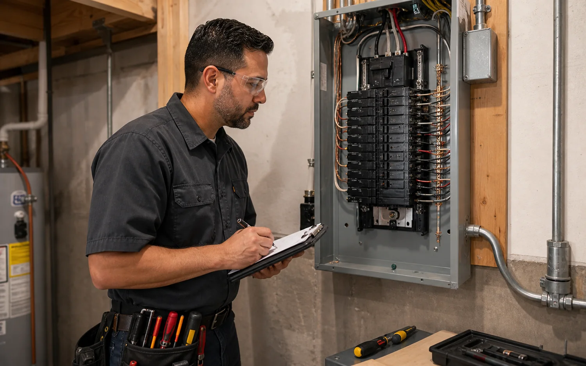
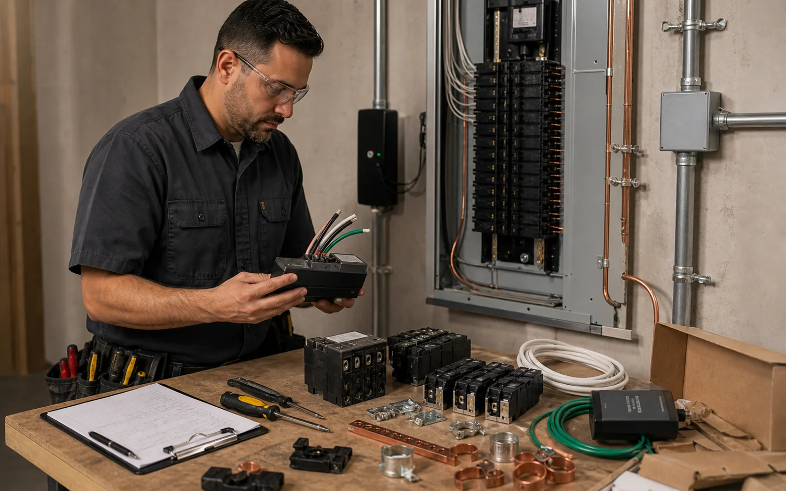

Photo and document review
The request should include panel photos, labels, inspector reports, utility notes, appliance additions, remodel plans, and any deadlines tied to insurance, sale, or inspection.
Panel and inspection requests require careful scoping because they may involve service size, utility coordination, grounding, permits, breaker compatibility, insurance concerns, and future electrical demand. helps collect the details a provider needs.

This group covers inspection requests, panel replacements, subpanels, breaker issues, grounding and bonding concerns, surge protection, and code correction lists from inspectors, insurance companies, property managers, or remodel teams.

Useful intake photos include the full panel, open breaker view if safe and allowed, service label, meter area, grounding electrode area, subpanels, and any inspector notes. The provider then confirms whether the work is repair, upgrade, correction, or replacement.
A provider may need panel brand and model, service rating, meter photos, grounding electrode details, subpanel locations, major loads, inspector notes, and future equipment plans. The final scope may be a repair, breaker correction, subpanel, surge protection, full panel replacement, service upgrade, or utility-coordinated project.

The exact method depends on the building, equipment, local code, and provider judgment, but these are the practical checkpoints that make the request clearer.
The request should include panel photos, labels, inspector reports, utility notes, appliance additions, remodel plans, and any deadlines tied to insurance, sale, or inspection.
Providers may review service rating, breaker compatibility, bus condition, grounding, bonding, conductor size, available spaces, and major existing loads.
Panel replacement and service upgrades often require permits, inspection, meter coordination, utility scheduling, and clear responsibility for who handles each step.
The provider confirms whether the issue is a repair, panel cleanup, subpanel, service upgrade, surge protection, or broader correction plan.
Electrical requirements vary by jurisdiction and property type. These pages describe common coordination needs; the independent provider confirms the enforceable requirements for the actual site.
Photos, symptoms, panel access, service group, timing, and property type help the first provider call become more useful.